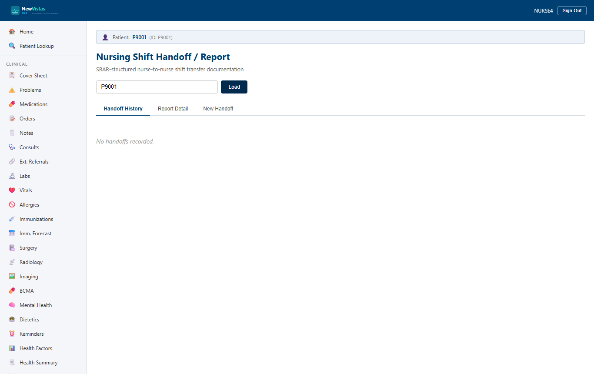

Shift Handoff (SBAR)
Hand a patient off at end of shift with a structured SBAR report — Situation, Background, Assessment, Recommendation — and carry it through the Draft → Completed → Acknowledged lifecycle so the incoming nurse confirms receipt. The screen has three tabs: Handoff History, New Handoff, and Report Detail.
Open the Shift Handoff screen
- In the sidebar, under Nursing, click Shift Handoff (or go to
/shift-handoff). - In the Patient ID field, type the patient ID (e.g.
9). - Click Load. The Handoff History tab loads; if no handoffs exist yet, the table is empty.

Create an SBAR handoff
- Click the New Handoff tab.
- Set the Shift (
Day,Evening, orNight), your Outgoing Nurse ID (e.g.NURSE1), Outgoing Nurse Name (e.g.JOHNSON,MARY R), and the Bed # (e.g.301-A). - Write the four SBAR sections — S – Situation (current condition and reason for the report), B – Background (history, meds, allergies, labs), A – Assessment (your nursing findings and trends), and R – Recommendation (pending items, watch parameters, plans).
- Click Create Handoff.
A green banner reads "Handoff created: HANDOFF-…" and the new entry appears on the Handoff History tab with today's date, the shift, your name as Outgoing, Incoming shown as "--" (not yet assigned), and a Draft status (yellow badge).
Review the report detail
On the Handoff History tab, click View on a handoff to open it on the Report Detail tab. The detail shows the shift and date, status badge, outgoing and incoming nurses, and the bed/location, followed by the four colour-coded SBAR cards:
- S – Situation (blue heading)
- B – Background (teal heading)
- A – Assessment (green heading)
- R – Recommendation (yellow heading)
Below the SBAR cards, a Clinical Snapshot auto-populates (when data is available) with the latest vitals, pain score, acuity level, active nursing diagnoses, and pending tasks, and a Safety Concerns alert box appears if any concerns are flagged.
The handoff lifecycle
A handoff moves through three states. The action buttons on the Report Detail tab change with the status, so the next step is always the only one offered.
- Draft — the outgoing nurse has created the report. Click Complete Report to finalize it; the status becomes Completed (blue badge) and the Acknowledge (Incoming) button appears.
- Completed — the report is final and waiting for the incoming nurse. The incoming nurse signs in, loads the same patient, opens the report, and clicks Acknowledge (Incoming).
- Acknowledged — the incoming nurse has read and accepted the report (green badge). The Incoming field now shows their name and the handoff is complete.
| Status | Meaning | Badge |
|---|---|---|
| Draft | Report created, not yet finalized | Yellow / Warning |
| Completed | Outgoing nurse has finalized the report | Blue / Primary |
| Acknowledged | Incoming nurse has read and accepted | Green / Success |